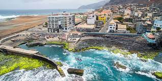
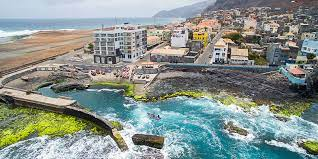

Eu sou o Ericles Fonseca e sou o criador desta pagina, tenho 21 anos sou estudante de Engenharia Informatica e de telecomunições na Universidade Tecnica do Atlantico. Sou de Cabo Verde, nasci na ilha de Santiago, mas vivo em São Vicente há 17 anos. O meu desporto favorito é o futebol.
 
